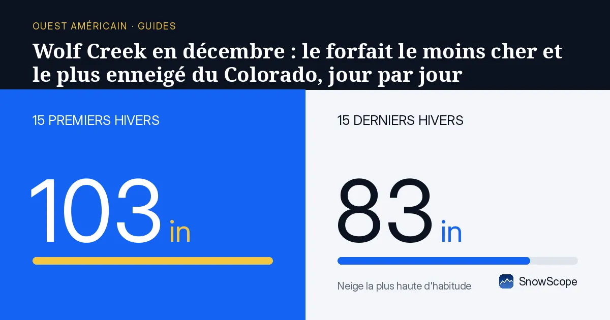

Wolf Creek en décembre : le forfait le moins cher et le plus enneigé du Colorado, jour par jour
Wolf Creek Ski Area se dresse haut sur la Ligne de partage des eaux entre Pagosa Springs et South Fork. Elle pratique un tarif fixe toute l'année, publie ses tarifs à l'avance et propose la neige la plus profonde de mi-décembre parmi trois stations du Colorado que nous avons vérifiées. Voici à quoi ressemble un décembre typique à chaque altitude, et quand réserver pour éviter les tarifs de pointe.
Consultez les prévisions neige en temps réel pour Wolf Creek Ski Area sur l'application SnowScopeHauteurs de neige, alertes poudreuse et carte 3D, gratuitement.
Trois altitudes, trois histoires de neige
Wolf Creek s'étend de 3 128 m à la base à 3 585 m au sommet, avec 11 remontées et environ 50 km de pistes. La profondeur de neige change selon l'altitude. Le 15 décembre en année typique, la base affiche 74 cm, mi-montagne à 3 356 m en retient 87 cm, et le sommet atteint 92 cm. À la veille du Nouvel An, mi-montagne grimpe à 118 cm et le sommet à 127 cm.
La fiabilité est élevée mais non absolue. Le 15 décembre, 72 % des hivers ont 50 cm ou plus à mi-montagne. Les bonnes semaines de neige, que nous définissons comme une moyenne hebdomadaire de 50 cm ou plus, apparaissent dans 59 % des hivers la première semaine de décembre mais dans 78 % des hivers à la semaine de Noël. Quand les tempêtes contournent les montagnes de San Juan, tout le col en souffre : un décembre maigre, un cas sur dix, ne peut avoir que 12 cm le 15.

Quand venir et combien ça coûte
Les tarifs des forfaits Wolf Creek 2026-27 sont fixes et affichés : 96 $ les jours normaux, 110 $ les jours de pointe. En décembre, les jours de pointe vont du 20 au 23 décembre et du 26 au 31 décembre. Cela signifie que vous économisez 14 $ par forfait si vous skiez avant le 20 décembre, ou le 24 ou 25 décembre.
Les forfaits multi-jours offrent un meilleur rapport pour les séjours plus longs. Un forfait 2 jours coûte 192 $ aux dates normales ou 220 $ aux dates de pointe. Un forfait 3 jours coûte 285 $ ou 327 $. Le décembre le moins cher est donc n'importe quand avant le 20, plus les deux jours de Noël lui-même.

Comment ça se compare : Loveland et Ski Cooper
Loveland, sur l'I-70 à l'ouest de Denver, propose des forfaits de début de saison à 60 $ en ligne jusqu'au 13 décembre, puis 159 $ au guichet à partir du 14 décembre. Mi-montagne affichait 74 cm le 15 décembre en année typique, avec 67 % des hivers au-dessus de 50 cm. Ski Cooper près de Leadville offre l'affaire en semaine à 49 $, montant à 99 $ les week-ends et jours fériés, et affichait 66 cm à mi-montagne le 15 décembre en année typique, avec 70 % des hivers au-dessus de 50 cm.
Wolf Creek est la plus enneigée des trois selon nos chiffres à mi-montagne, et la seule à tarif fixe toute la saison. Elle se dresse plus haut et plus loin de Denver : vous payez davantage en temps de trajet, mais moins de monde et de la neige plus profonde, c'est l'échange.
Décembre était plus chaud dans les hivers passés
Le début décembre était plus profond autrefois. Dans les 15 premiers hivers de nos données, mi-montagne affichait 140 cm le 15 décembre en année typique. Dans les 15 derniers hivers, cela a chuté à 60 cm, et la part des hivers au-dessus de 50 cm est passée de 87 % à 67 %. L'hiver dernier était très maigre à cette date : seulement 23 cm.
La tendance est claire mais non absolue. Mi-décembre et plus tard dans le mois tiennent toujours bien. Le 25 décembre, la profondeur typique atteint 107 cm à mi-montagne, et à la veille du Nouvel An elle atteint 118 cm. La meilleure semaine en année typique est la dernière semaine de l'année, avec des profondeurs autour de 118 à 127 cm à mi-hauteur et au sommet.
Ce qu'il faut savoir avant de partir
Wolf Creek Pass (US-160) est haut, raide et implacable. La conduite hivernale exige des chaînes ou une transmission intégrale et une conscience des conditions météorologiques. Consultez le site de l'Agence des Transports du Colorado avant de partir. Le col ferme occasionnellement en tempête de neige, et les conditions peuvent changer rapidement.
Il n'y a pas de logements sur la montagne. Les villes les plus proches sont Pagosa Springs (40 km au sud) et South Fork (24 km au nord). La plupart des visiteurs montent pour la journée. À plus de 3 000 m d'altitude, allez doucement le premier jour et buvez de l'eau pour vous adapter. La neige de début de saison peut être fine ; les rochers peuvent être proches sous une couche mince.
Conseils aux skieurs
- Skiez avant le 20 décembre pour verrouiller le tarif normal de 96 $ au lieu de 110 $.
- Réservez un forfait 2 ou 3 jours si vous pouvez ; le coût par jour tombe à 96 $ ou 95 $ par jour aux tarifs normaux, égalant ou battant les prix des forfaits uniques.
- Prévoyez mi-montagne à 3 356 m ou plus haut ; la base à 3 128 m peut être fine en début de saison.
- Portez des chaînes ou utilisez une transmission intégrale ; vérifiez les conditions de l'Agence des Transports du Colorado et l'état des routes avant de passer Wolf Creek Pass.
- Prenez le premier jour doucement à cette altitude ; buvez de l'eau et évitez l'effort excessif pour vous adapter à plus de 3 000 m.
À propos de ces chiffres
Les hauteurs de neige des stations sont la neige la plus épaisse sur le haut du domaine à la date indiquée ; ce sont des estimations pour une zone, pas une mesure en un point. Les prévisions peuvent changer. Consultez toujours le bulletin d'avalanche officiel avant le hors-piste.
Bulletins d'avalanche officiels: Colorado Avalanche Information Center
Citer ce bulletin
Pour la recherche, l'enseignement ou la presse : chiffres et graphiques réutilisables librement sous CC BY 4.0 avec cette citation.
SnowScope (2026), Wolf Creek en décembre : le forfait le moins cher et le plus enneigé du Colorado, jour par jour, https://snowscope.app/blog/fr/2026/11/wolf-creek-colorado-december-skiing-value.html, consulté le 2026-11-14
SnowScope (Atlas Labs). (2026, November 14). Wolf Creek en décembre : le forfait le moins cher et le plus enneigé du Colorado, jour par jour. SnowScope snow reports. https://snowscope.app/blog/fr/2026/11/wolf-creek-colorado-december-skiing-value.html
BibTeX
@misc{snowscope2026wolfcreekcoloradodecembe,
author = {{SnowScope (Atlas Labs)}},
title = {Wolf Creek en décembre : le forfait le moins cher et le plus enneigé du Colorado, jour par jour},
year = {2026},
month = nov,
howpublished = {\url{https://snowscope.app/blog/fr/2026/11/wolf-creek-colorado-december-skiing-value.html}},
note = {Published 2026-11-14 16:17 UTC; accessed 2026-11-14}
}· CC BY 4.0 · Méthodes, données et outils →
Wolf Creek Ski Area : neige et température selon l'altitude, cet hiver vs l'hiver dernier (outils) →
Suivre Wolf Creek Ski Area
Gratuit : un message quand la neige arrive, et la météo chaque matin.